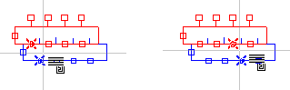
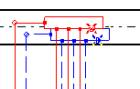
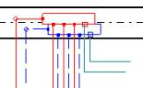
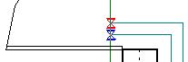

Miután beállítottuk a rajzra a fûtõfelületeket és az osztókat, hozzá lehet kezdeni a bekötõ vezetékek elhelyezéséhez. A bekötéseket úgy kell vezetni, hogy lehetõség szerint tükrözzék a fûtési rendszer tényleges kinézetét, miután ez egyrészt hatással van a rajzra, mint kivitelezési dokumentációra, másrészt pedig a méretezés pontosságára.
A bekötéseket a legjobb az osztótól vezetni a fûtõfelülethez, nem pedig fordítva. A normál esetekben, amikor az elõremenõ bekötések párhuzamosan futnak a visszatérõkkel, szakaszpárokat kell használni. Hasznos bekapcsolni az AUTO és az ORTO üzemmódokat is.
A szerkesztés megkezdése elõtt meg kell tervezni, hogy melyik FF legyen bekötve a sorban következõ osztócsonkokhoz, hogy a vezetékek ne keresztezzék egymást.
Az osztó-gyûjtõ bekötésekor az FF-hez a program alapértelmezésben a balról az elsõ szabad helyet választja ki, és oda köti ki az odavezetett bekötést. Ezt a funkció az osztó razjolásakor meg lehet változtatni – az adattáblázatban „A kilépés sz. az osztóból” mezõbe „az elsõ szabad” helyett a „tetszõleges” opciót kell kiválasztani, vaqgy be kell írni a konkért konzolpár számát. A program megengedi, hogy a bekötést tetszõleges helyre kössük be az osztóba, vagy a konkrét szám beírásakor automatikusan odahúzza a bekötés rajzát a megfelelõ helyhez:

¨ Az FF bekötéséhez az osztóba bekötõ vezeték segítségével:
1. Ki kell választani a nézet helyes nagyítási méretarányát. Az a helyes méretarány, amelynél az egyes osztócsonkok és a már meglevõ bekötõvezetékek jól látszanak, ugyanakkor látható az egész terület, amelyen keresztül a bekötésnek futnia kell.
2. Ki kell választani a „Bekötéspár” elemet a nyomógombra történõ kattintással a „Sugárzó” eszközsávon. A program átlép a bekötéspár behelyezésének üzemmódjába.
3. A kurzor az osztónak arra a
pontjára kell állítani, ahol azok a kiválasztott csonkok vannak, amelyektõl a
bekötéseket vezetni kell. Ha az AUTO üzemmód be van kapcsolva, program ferde
kereszteket jelenít meg, amelyek azt jelzik, hogy a bekötések melyik csonkhoz
lesznek bekötve:

4. Kattintani kell a baloldali
egérgombbal. A program létrehozza a bekötést az osztóhoz, és a bekötés (az elsõ
darabja) behelyezésének üzemmódjában marad. Minden egyes további kattintás az
egér baloldali gombjával egy töréspontot állít be a bekötésre. A bekötés alakja
a kurzor pillanatnyi helyzetétõl függ a szerkesztés közben, egy szürkés vonal
ábrázolja:

5. A bekötés szerkesztésének
befejezéséhez, tehát az FF-hez való bekötéséhez, a kurzort az FF szélére kell
állítani. Bekapcsolt AUTO üzemmódnál megjelennek a javasolt bekötési pontok,
ekkor elég az egér baloldali gombjával kattintani, a program létrehozza a
bekötõvezeték bekötését az FF-hez, és átlép kijelölõ üzemmódba:

6. Ha az AUTO üzemmód ki van kapcsolva, akkor a kurzort pontosan az FF peremére kell állítani a kívánt helyen, majd megnyomni elõször az egér baloldali (a bekötõvezeték bekötéséhez az FF-be), majd a jobboldali gombját (a bekötõvezeték behelyezésének befejezéséhez, és a kijelölõ üzemmódba történõ átlépéshez).
A bekötés kikapcsolt AUTO üzemmód melletti létrehozása annyiból szükséges, hogy gyakran elõfordulhat a bekötés utolsó darabjának helytelen korrekciója bekapcsolt AUTO üzemmódnál. Átmenetileg az AUTO üzemmódot a Shift billentyû segítségével lehet kikapcsolni, és legjobb ekkor, a kikapcsolt AUTO üzemmód mellet létrehozni a bekötést.
A bekötés tetszõleges darabból állhat (a rajzon). Ezek a vezetékszakaszok egy üres rombusszal vannak összekötve, amely a töréspontot képviseli, vagy kitöltött négyzettel, amely két bekötés összeköttetését (rajzi, nem pedig tényleges) jelzi – a program számára a kitöltött belsejû, kis négyzeteket tartalmazó bekötések formálisan két külön bekötést jelentenek. Ez a helyzet megengedett, és nem okoz hibát a méretezésben, azonban negatívan befolyásolja a bekötések adatainak szerkesztését (egy valóságos bekötés ilyenkor mesterségesen több részre van bontva, és szükségtelenül sok sor van a bekötés adattáblázatában). Ha ilyen helyzet fordul elõ, használni kell a bekötéseket egyesítõ funkciót (lásd a következõ pontot).
Meg kell különböztetni a szakaszpár távolságot a rajzon a tényleges méretezési távolságuktól. A szakaszpár felhasználásával történõ rajzoláskor ezek bizonyos távolságban vannak rajzolva egymástól – ezt meg lehet változtatni az adattáblázatban a bekötés beállításakor, de ezt a távolságot a program nem fogja a számításoknál figyelembe venni. A bekötések tényleges távolságát, ami a méretezésnél is figyelembe lesz véve, megadhatja a felhasználó (az adattáblázatban, a „…FF-en keresztül”, vagy kijelölheti a program.
Ez azonban nem módosítja automatikusan a bekötések távolságát a rajzon a méretezés után!
A program leolvassa a rajzról a bekötés teljes hosszát, valami a különbözõ FF-eken keresztül menõ darabjainak hosszát, függetlenül a rajzi darabok számától.
! A bekötések nem lehetnek elágaztatva.
! A méretezés elõtt a program elvégzi a bekötések helyességének ellenõrzését a gépészet keretében. Ez azt jelenti, hogy a programban nem lehetnek bekötetlen FF-ek, vagy „vak” bekötések.
Minden FF-nél két bekötési pontnak kell lennie, egy az elõremenõ, egy a visszatérõ számára. Ez alól kivétel a bekötésekkel fûtött FF, amelynek nincs semmilyen bekötési pontja.